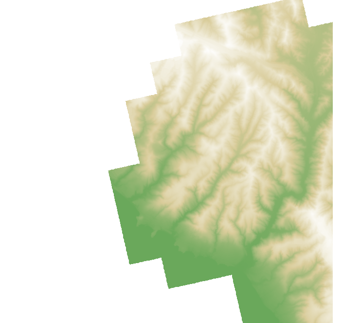
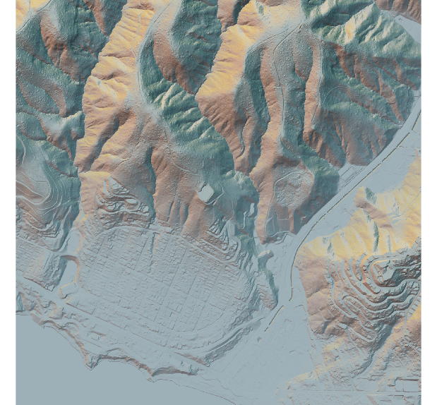
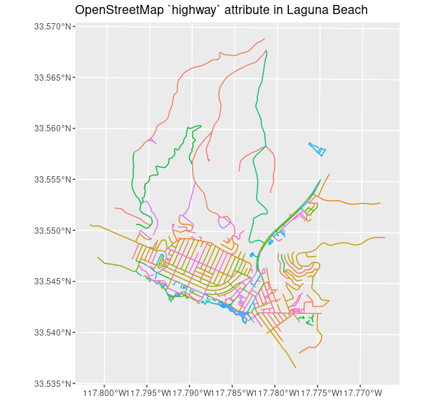
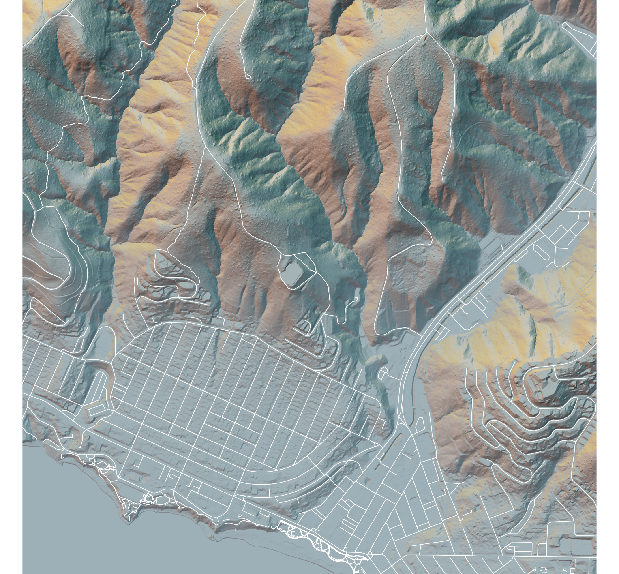
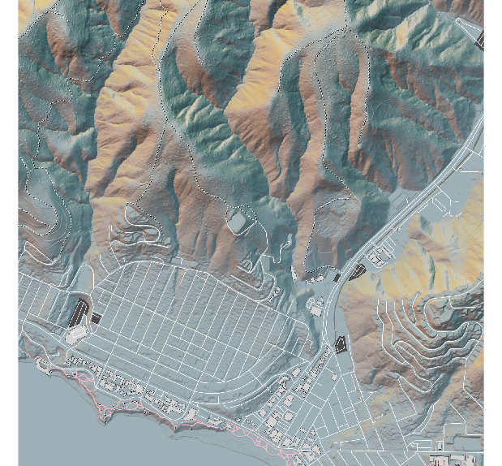
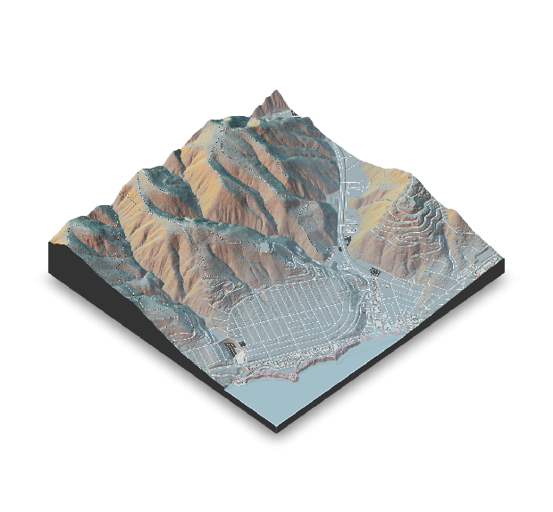

# Install dev packages
devtools::install_github("tylermorganwall/rayshader")
devtools::install_github("tylermorganwall/rayimage")
# Load libraries
library(rayshader)
library(raster)
library(osmdata)
library(sf)
library(dplyr)
library(ggplot2)
# Source elevation data
laguna <- raster::raster("./USGS_one_meter_x42y372_CA_SoCal_Wildfires_B1_2018.tif")Beautiful Maps with Rayshader
rayshader
ggplot2
visualizations
If you love beautiful 2D and 3D maps, now you can create your own with elevation data, the rayshader package, OpenStreetMap, and ggplot2.
Overview
R, rayshader, OpenStreetMap… Lots of amazing learning to be had with these mapping tools. I’m following Tyler Morgan-Wall PhD’s Adding Open Street Map Data to Rayshader Maps in R tutorial and learning a lot about the development of beautiful maps with R. Laguna Beach is one of my favorite cities in the USA (and the world!) so I applied the concepts from this tutorial to building 2D and 3D maps of Laguna Beach. My work-in-progress and screen captures are below.
Tyler Morgan-Wall PhD (TMW) authored the rayshader package and his step-by-step tutorial is both easy to follow and incredibly informative. If you get stuck (more like, “when you get stuck”), you can almost always find an answer on the rayshader website or GitHub repo (excellent technical documentation and code examples).
One last caveat before I dive into my code - Finding high-quality LIDAR or Digital Elevation Models (DEMs) for United States cities is not easy. To apply the steps below to your location of choice, you’ll have to get creative about cropping LIDAR/DEMs to zoom into the geography that you want to model (more info on cropping in the sections below).
Setup
Where do you start? Find yourself a high-resolution DEM or LIDAR capture of a location that you love. The team at Shaded Relief has some high-res DEMs for public consumption: http://shadedrelief.com/SampleElevationModels/
My starting point was a LIDAR capture of Laguna Canyon in California. This geo-data, made available by the United States Geological Survey’s National Geologic Map Database, was captured in 2018 as part of a study on Southern California wildfires. The LIDAR image (captured as a TIF file) includes three variables per observation: latitude, longitude, and elevation. This Laguna Canyon LIDAR image captures these data points in one meter increments (hence the 257 MB file size). You can download this TIF from my Google Drive here: https://drive.google.com/Javier/USGS_TIF
Start by installing the development versions of the rayshader and rayimage packages, and loading several others packages used in this project. I run Ubuntu and experienced some dependency issues, at least initially. If you can Google Search, you can figure out the additional Linux libraries that you might need (my apologies for not documenting this better! - I worked on this code in March but just now getting around to documenting my workflow… in September!).
Libraries
EDA
To better explore the data, lets begin by visualizing the elevation data with rayshader defaults to understand the topography that we are working with. Before we can render this visual, we need to transform the laguna data object (assigned above) to a matrix. For faster rendering and prototyping, you can also resize the matrix using rayshader::resize_matrix(). This resizing will downscale your full dataset using bilinear interpolation.
# Transform the spatial data structure into a regular R matrix
laguna_mat <- rayshader::raster_to_matrix(laguna)
# Create small version of matrix for quick visual prototyping
laguna_small <- rayshader::resize_matrix(laguna_mat, 0.1)
# Plot base map using basic color defaults
laguna_small %>%
rayshader::height_shade() %>%
rayshader::plot_map()
Cropping
I wanted to focus on downtown Laguna Beach but this only represents a small fraction of the raw LIDAR. To get the desired lat-long range of downtown Laguna Beach, I used Google Maps to get the endpoints of my desired box. To accomplish this cropping, below, we relied on a custom cropping function that TMW shared on the rayshader site.
# Crop to fit desired box around downtown Laguna Beach
lat_range <- c(33.541370925562376, 33.55945552155357)
long_range <- c(-117.79622401045448, -117.77493476466955)
convert_coords <- function(lat, long, from = CRS("+init=epsg:4326"), to) {
data = data.frame(long = long, lat = lat)
sp::coordinates(data) <- ~ long + lat
sp::proj4string(data) = from
# Convert to coordinate system specified by EPSG code
xy = data.frame(sp::spTransform(data, to))
colnames(xy) = c("x","y")
return(unlist(xy))
}
raster::crs(laguna)
utm_bbox <- convert_coords(lat = lat_range,
long = long_range,
to = crs(laguna))
raster::extent(laguna)
extent_zoomed <- raster::extent(utm_bbox[1], utm_bbox[2],
utm_bbox[3], utm_bbox[4])h
laguna_zoom <- raster::crop(laguna, extent_zoomed)
laguna_zoom_mat <- rayshader::raster_to_matrix(laguna_zoom)2D Map
Base Map
I was inspired by the relief shading work of Eduard Imhof, Swiss cartographer and mapping visionary. In particular, I loved the blueish-pink palette that Imhof popularized. When you get to this step, try adjusting the settings below to your liking. We will continue to build on top of this initial base map layer.
base_map <- laguna_zoom_mat %>%
rayshader::height_shade() %>%
rayshader::add_overlay(
rayshader::sphere_shade(
laguna_zoom_mat,
texture = rayshader::create_texture("#f5dfca","#63372c","#dfa283","#195f67","#c2d1cf",
cornercolors = c("#ffc500", "#387642", "#d27441","#296176")),
sunangle = 0,
colorintensity = 5)) %>%
rayshader::add_shadow(rayshader::lamb_shade(laguna_zoom_mat), 0.2) %>%
rayshader::add_overlay(
rayshader::generate_altitude_overlay(
rayshader::height_shade(laguna_zoom_mat, texture = "#91aaba"),
laguna_zoom_mat,
start_transition = min(laguna_zoom_mat)-200,
end_transition = max(laguna_zoom_mat)))
rayshader::plot_map(base_map)
OpenStreetMap
OpenStreetMap (OSM) offers an open-source, editable geographic database of the world and the underlying data includes details for roads, buildings, hiking paths, rivers, etc. We’ll leverage the osmdata package for R to import OSM data (and utilizing the overpass API). The osmdata package processes routines in C++ for fast construction and loading into R. We’ll first load several layers of OSM details. Subsequently, we’ll convert those sf objects to the coordinate system we’re working with for this rayshader project.
osm_bbox = c(long_range[1],lat_range[1], long_range[2],lat_range[2])
laguna_highway <- osmdata::opq(osm_bbox) %>%
osmdata::add_osm_feature("highway") %>%
osmdata::osmdata_sf()
# Transform coordinates to new projection
laguna_lines <- sf::st_transform(laguna_highway$osm_lines,
crs = raster::crs(laguna))
# View streets as a ggplot2 render
ggplot(laguna_lines, aes(color = osm_id)) +
geom_sf() +
theme(legend.position = "none") +
labs(title = "Open Street Map `highway` attribute in Laguna Beach")
Layering
To begin, lets simply layer all the “highway” OSM attributes on top of our base map using white lines to represent the lines.
# Transform sf LINESTRING geometry and create semi-transparent overlay
base_map %>%
rayshader::add_overlay(
rayshader::generate_line_overlay(
laguna_lines, extent = extent_zoomed,
linewidth = 3, color = "white",
heightmap = laguna_zoom_mat)) %>%
rayshader::plot_map()
I want different styles for different OSM lines so let’s continue by creating several groups of OSM lines.
# Subset layers of laguna_lines
laguna_trails <- laguna_lines %>%
dplyr::filter(highway %in% c("path", "bridleway", "steps", "track"))
laguna_footpaths <- laguna_lines %>%
dplyr::filter(highway %in% c("footway"))
laguna_roads <- laguna_lines %>%
dplyr::filter(highway %in% c("unclassified", "primary",
"primary_link", "secondary",
"tertiary", "residential", "service"))
# Create one encompassing layer with independent element styling
trails_layer <-
rayshader::generate_line_overlay(
# Pink footpaths
laguna_footpaths, extent = extent_zoomed,
linewidth = 4, color = "pink",
heightmap = laguna_zoom_mat) %>%
# Note: While barely visible in the final outputs, the following
# code adds an offset black shadow to the white dashed lines to
# represent the hiking trails around Laguna Beach
rayshader::add_overlay(
rayshader::generate_line_overlay(
laguna_trails, extent = extent_zoomed,
linewidth = 4, color = "black", lty = 3, offset = c(2,-2),
heightmap = laguna_zoom_mat)) %>%
rayshader::add_overlay(
rayshader::generate_line_overlay(
laguna_trails, extent = extent_zoomed,
linewidth = 4, color = "white", lty = 3,
heightmap = laguna_zoom_mat)) %>%
# White roads
rayshader::add_overlay(
rayshader::generate_line_overlay(
laguna_roads, extent = extent_zoomed,
linewidth = 3, color = "white",
heightmap = laguna_zoom_mat))We’ll create some additional projections of OSM layers.
laguna_parking <- osmdata::opq(osm_bbox) %>%
osmdata::add_osm_feature("parking") %>%
osmdata::osmdata_sf()
laguna_building <- osmdata::opq(osm_bbox) %>%
osmdata::add_osm_feature("building") %>%
osmdata::osmdata_sf()
laguna_parking_poly <- st_transform(laguna_parking$osm_polygons, crs = crs(laguna))
laguna_building_poly <- st_transform(laguna_building$osm_polygons, crs = crs(laguna))Final Touches
Now we’re ready to build upon our base map and see the 2D visual in action. Let’s create a polygon layer of the parking and building features, and adding the styled trails_layer on top of that.
polygon_layer <-
rayshader::generate_polygon_overlay(laguna_parking_poly,
extent = extent_zoomed,
heightmap = laguna_zoom_mat,
palette = "grey30") %>%
rayshader::add_overlay(
rayshader::generate_polygon_overlay(laguna_building_poly,
extent = extent_zoomed,
heightmap = laguna_zoom_mat,
palette = "lightgrey"))
base_map %>%
rayshader::add_overlay(polygon_layer) %>%
rayshader::add_overlay(trails_layer) %>%
rayshader::plot_map()
3D Map
Features
To render a 3D map, we follow a very similar pipeline to the 2D map but utilizing rayshader::plot_3d(). This function introduces new arguments and I spent much more time than I had anticipated in adjusting the zscale, zoom, rotation, pitch, and water specifications.
To exaggerate the elevation details in this area, I decided on a zscale < 1 that would still resemble the reality and beauty of the Laguna Beach hills. Too low of a zscale, e.g., zscale = 0.25, was too exaggerated for my liking. Once the 3D viewer renders your visual, enter rayshader::render_snapshot() into your console to take a flat snapshot of your 3D rendering, saving your snapshot if desired.
base_map %>%
rayshader::add_overlay(polygon_layer) %>%
rayshader::add_overlay(trails_layer) %>%
rayshader::plot_3d(heightmap = laguna_zoom_mat,
zscale = 0.75, fov = 0,
theta = -45, zoom = 0.75, phi = 45,
water = TRUE, waterdepth = 4,
wateralpha = 0.4, watercolor = "lightblue",
waterlinecolor = "white", waterlinealpha = 0.5,
background = "white")
# Create 2D snapshot of 3D rendering
rayshader::render_snapshot()
Next Steps
I’ve seen some neat examples where developers add 3D polygons to their maps to represent residential housing, commercial properties, and public facilities. I recently read about methods for rendering much higher-resolution maps (this would be great for printing). Creating 3D flyovers with rayshader also looks surprisingly high-end for open-source software. These are all things I hope to revisit at some point in the near future. TMW knocked it out of the park with his package and tutorials, so I hope you find his content as useful as I did.
Session Info
R version 4.1.1 (2021-08-10)
Platform: x86_64-pc-linux-gnu (64-bit)
Running under: Ubuntu 20.04.3 LTS
Matrix products: default
BLAS: /usr/lib/x86_64-linux-gnu/blas/libblas.so.3.9.0
LAPACK: /usr/lib/x86_64-linux-gnu/lapack/liblapack.so.3.9.0
locale:
[1] LC_CTYPE=en_US.UTF-8 LC_NUMERIC=C
[3] LC_TIME=en_US.UTF-8 LC_COLLATE=en_US.UTF-8
[5] LC_MONETARY=en_US.UTF-8 LC_MESSAGES=en_US.UTF-8
[7] LC_PAPER=en_US.UTF-8 LC_NAME=C
[9] LC_ADDRESS=C LC_TELEPHONE=C
[11] LC_MEASUREMENT=en_US.UTF-8 LC_IDENTIFICATION=C
attached base packages:
[1] stats graphics grDevices utils datasets methods base
other attached packages:
[1] ggplot2_3.3.5 dplyr_1.0.7 sf_1.0-2 osmdata_0.1.6
[5] raster_3.4-13 sp_1.4-5 rayshader_0.26.1
loaded via a namespace (and not attached):
[1] rgl_0.107.14 Rcpp_1.0.7 lubridate_1.7.10 lattice_0.20-44
[5] png_0.1-7 prettyunits_1.1.1 class_7.3-19 ps_1.6.0
[9] assertthat_0.2.1 rprojroot_2.0.2 digest_0.6.27 foreach_1.5.1
[13] utf8_1.2.2 R6_2.5.1 e1071_1.7-8 httr_1.4.2
[17] pillar_1.6.2 rlang_0.4.11 progress_1.2.2 curl_4.3.2
[21] callr_3.7.0 magick_2.7.3 pkgdown_1.6.1 desc_1.3.0
[25] devtools_2.4.2 rgdal_1.5-23 htmlwidgets_1.5.3 munsell_0.5.0
[29] proxy_0.4-26 compiler_4.1.1 xfun_0.25 pkgconfig_2.0.3
[33] pkgbuild_1.2.0 htmltools_0.5.2 tidyselect_1.1.1 tibble_3.1.4
[37] codetools_0.2-18 fansi_0.5.0 crayon_1.4.1 withr_2.4.2
[41] grid_4.1.1 gtable_0.3.0 jsonlite_1.7.2 lifecycle_1.0.0
[45] DBI_1.1.1 magrittr_2.0.1 scales_1.1.1 units_0.7-2
[49] KernSmooth_2.23-20 cli_3.0.1 cachem_1.0.6 farver_2.1.0
[53] fs_1.5.0 remotes_2.4.0 doParallel_1.0.16 testthat_3.0.4
[57] xml2_1.3.2 ellipsis_0.3.2 generics_0.1.0 vctrs_0.3.8
[61] iterators_1.0.13 tools_4.1.1 rayimage_0.6.2 glue_1.4.2
[65] purrr_0.3.4 hms_1.1.0 processx_3.5.2 pkgload_1.2.1
[69] parallel_4.1.1 fastmap_1.1.0 colorspace_2.0-2 sessioninfo_1.1.1
[73] classInt_0.4-3 rvest_1.0.1 memoise_2.0.0 knitr_1.33
[77] usethis_2.0.1 Resources
- rayshader: https://www.rayshader.com/
- rayrender: http://www.rayrender.net/
- Tyler Morgan-Wall, PhD: https://www.tylermw.com/